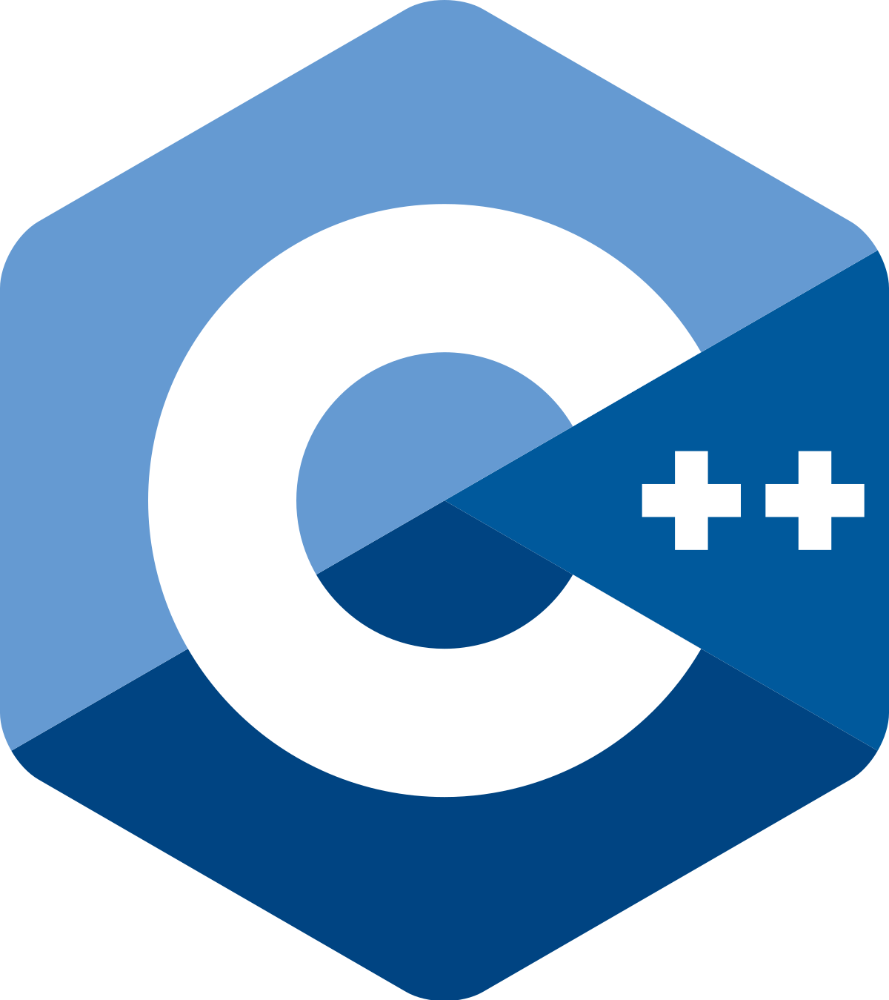
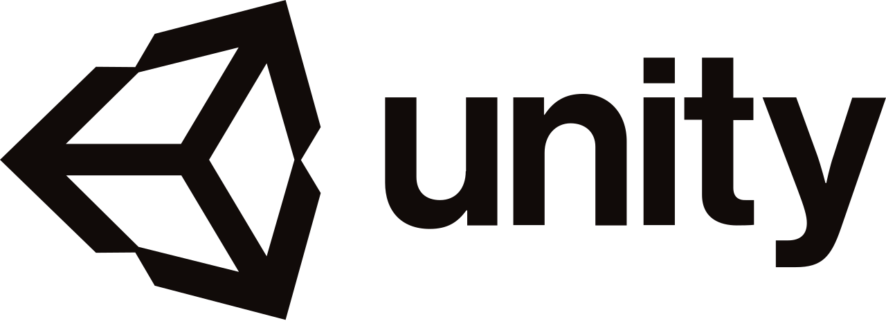

About me
My name is Josefine Klintberg and I'm a 27 year old MSc student within Media Technology. I've got a strong technical foundation with a BSc in Engineering Physics from KTH in Stockholm,
a BSc in Media Technology and Engineering from Linköping University and currently I'm studying for a MSc in Media Technology at Linköping University, graduating June 2021.
During the spring of 2021 I am writing my master thesis within the pipeline team at the VFX-company Goodbye Kansas in Stockholm.
As a person, I'm positive, structured and hard working with a passion for movies, animation, coding and equality. I've got a background as an elite athlete in orienteering and I still love to run,
especially in the forest, and participate in competitions and extreme races. I also spend time photographing, drawing, sewing, playing games, watching movies and creating fun coding projects.
Contact Information
Programming Skills
Main coding languages: C++, Python, HTML & CSS, JavaScript
Basic knowledge/familiar with: C, C#, Java, Lua
API/Libraries: GLSL/HLSL, OpenGL
Programs and tools: Unity, Blender3D, Maya, 3Ds Max, MATLAB, Adobe Photoshop, Office Suite



Education
MSc Media Technology and Engineering, LiU (Linköping University)
2019 - 2021
A master program with main focus on advanced computer graphics where I've chosen
courses such as AI, procedural methods, modelling and animation, SFX, information visualization,
image reproduction and advanced image processing.
BSc Media Technology and Engineering, LiU (Linköping University)
2018 - 2020
A program that provides a solid foundation in mathematics, programming and computer
graphics. It involves computer science courses in C++, Java and data structures as well
as computer graphics and project courses. BSc title: Domesday: Immersive and scalable development for a dome-screen
Exchange Semester, Trinity College Dublin
Spring 2018
I studied in Dublin for one semester as part of my BSc in Engineering Physics. I
performed my
bachelor thesis here as part of a course in computer engineering where I programmed a small self-driven
vehicle.
BSc Engineering Physics, KTH (the Royal Institute of Technology)
2015 - 2018
A program that focuses on mathematics and physics. The
program consists of many theoretical courses that thaught me about numerical solutions, simulations and
mathematical models. BSc thesis performed at Trinity College Dublin with the title: The Autonomous Vehicle
Work Experiences
R&D intern, Goodbye Kansas
February 2021 - current
Developer intern at King in Stockholm working on gameplay systems with a focus on graphics, rendering and performance. Working on Crash Bandicoot: On the Run!
Developer Intern, King
June 2020 - October 2020
Developer intern at King in Stockholm working on gameplay systems with a focus on graphics, rendering and performance. Working on Crash Bandicoot: On the Run!
Programming mentor, Linköping University
September 2019 - June 2020
Programming mentor (LiTHe Hack) at Linköping University where I'm
helping
hosting 2 coding nights per week where students at the university
can come and get help with programming courses and projects.
Summer Research Project, Linköping University and LiU Innovation
Summer 2019
Summer research project with connection to a researcher at Linköping University. The
topic of the project was within Storytelling and Data Visualization.
Substitute Teacher, Eksjö Kommun
August 2013 - June 2014
I worked as a substitute teacher at schools in Eksjö Kommun during one year. The
students was between 6 and 15 years old and I was teaching a variety of different subjects, but with
main focus within mathematics and natural science.
Non-Profit work
Coach and Board Member, CoderDojo
2019 - 2021
I'm volunteering in the local CoderDojo group as a programming coach during
programming workshops for children between the ages of 7 and 17. During 2019 and 2020 I was also part of the board with
responsability for
recruiting and communication with coaches.
Blogger and writer, Datatjej (ComputerGirl)
2018 - 2019
I worked as a blogger at Datatjej, which is a nonprofit association that aims to
inspire girls and women to get into computer science and technology. I write two articles each month
with the goal to share my passion for coding and hopefully inspire other women to choose a career within
IT.
Organizer of the Welcoming Reception, KTH and LiU
2017 and
2019
I was one of 7 persons that worked during one year to organise the welcoming
reception for 120 new students at Engineering Physics at KTH in Stockholm. At Linköping University I was
part of a team of 10 persons who worked for a year to organise the welcoming reception for the MSc
program in Media Technology and Engineering.
Art Director and Project Group Member, Equality Week KTH
2016
- 2017
I was a project group member of the Equality Week at KTH and my position was Art
Director. The Equality Week works to raise awareness and create discussion around equality at university
and in the technology industry. The work resulted in a week filled with lectures, debates and panel
discussions around equality.
Languages
Swedish: Mother tongue
English: Highly Proficient
French: Working Knowledge
Awards and Honors
Awarded 'The Gray Cube' and 'The Orange Cube'
, MSc Media Technology and Engineering at LiU
2021
Me and Linus Mossberg were awarded with 'The Gray Cube' that is awarded to the best technical project
created during the past year at the program MSc in Media Technology at Linköping University.
We were awarded with the prize for the Maya-plugin we created, the
Voronoi Fracturing.
Me and Ester Lindgren were awarded with 'The Orange Cube' that is awarded to the best creative project created during the past year at the program MSc in Media Technology at Linköping University.
We were awarded with the prize for our project in information visualization called
Visualizing Women in Movies.
Scolarship
, Norrköpings Polytekniska Förening
2020
I was awarded with a scolarship from Norrköpings Polytekniska Förening with the motivation involving my hard work at university
and the high grades I've received, my involvement in teaching coding to kids at CoderDojo and my active strive for a more diverse tech-industry.
Awarded 'The Gray Cube'
, MSc Media Technology and Engineering at LiU
2020
I was awarded with 'The Gray Cube' that is awarded to the best technical project
created during the past year at the program MSc in Media Technology at Linköping University. The award is
decided after voting by students at the program. I was awarded with the prize for my
procedural water shader.
Awarded 'Jan Peterssons Minnesfond', MSc Media Technology and Engineering at LiU
2019
I was awarded with the 'Jan Peterssons Minnesfond' that is handed out each year to a
student attending the MSc in Media Technology and Engineering that has inspired others towards
programming.
Nomination to 'Årets IT-tjej', Microsoft Sweden
2019
I was one of the 10 nominated for becoming the 'Computer Girl of 2019' which is an
annual competition hosted by Microsoft Sweden. The competition is dedicated to highlight female students
that can be seen as role models within computer science, be part of inspiring young girls to programming
and to work for a more inclusive and equal IT industry.
Elite Athlete, Orienteering
2010 - 2018
I've been competing in the sport orienteering for most of my life. During the time
of
my elite career I've won 11 medals at the Swedish Championships and a bronze at the European Youth
Orienteering Championships.
Scolarships and awards at High School, Eksjö Gymnasium
2013
I was awarded 4 scolarships and awards during my time at Eksjö Gymnasium (High
School):
1: Brita Lewinskys scolarship for french studies. 2: Award for best GPA in the class. 3: Award for me
and a friend's final project
that involved coding a webpage that made it to top 3 in the national competition Webbstjärnan. 4:
Scolarship in chemistry for
being able to participate in the Berzelius days at Stockholm University with students from all over
Sweden.